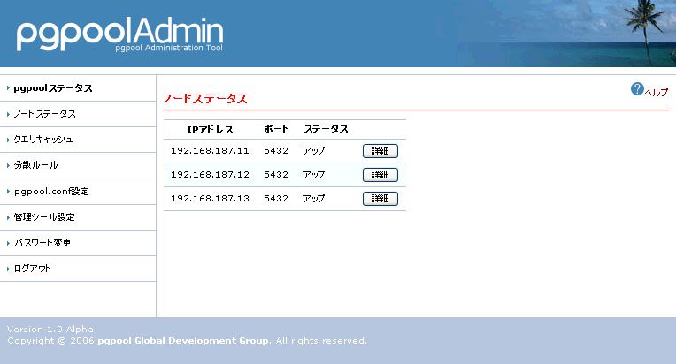
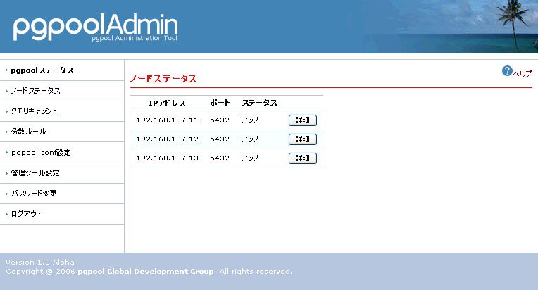

ノードステータス
概要
ノードステータスでは、各ノードについて- IPアドレス
- ポート
- ステータス
- 詳細情報
を取得することができます。

機能
| ノードのIPアドレス | |
| Postmasterが稼働しているポート番号 | |
| Postmasterが稼働状態であるかどうかを表示します。 | |
| Postmasterが稼働状態の場合にのみ表示されます。 PostgreSQLの場合にはpg_settings情報、pgpoolの場合にはpool_statusを取得します。 |
を取得することができます。

| ノードのIPアドレス | |
| Postmasterが稼働しているポート番号 | |
| Postmasterが稼働状態であるかどうかを表示します。 | |
| Postmasterが稼働状態の場合にのみ表示されます。 PostgreSQLの場合にはpg_settings情報、pgpoolの場合にはpool_statusを取得します。 |